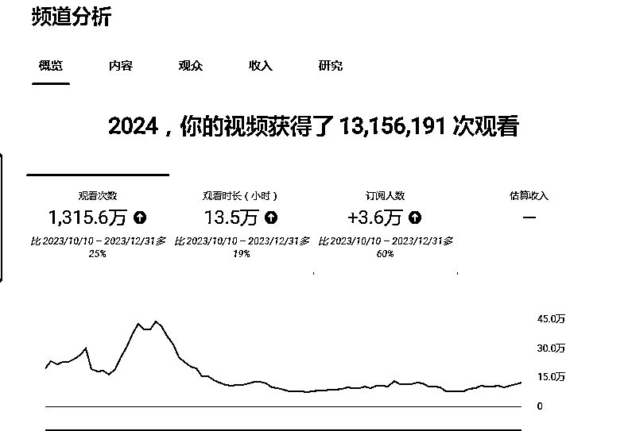
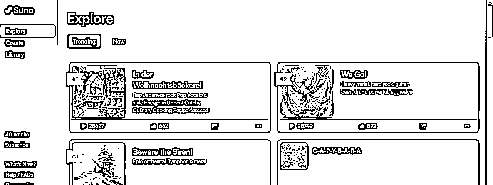
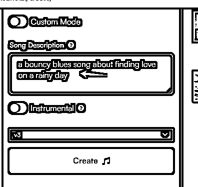
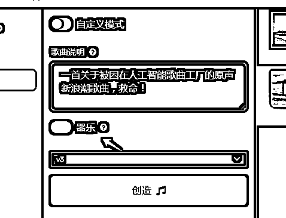
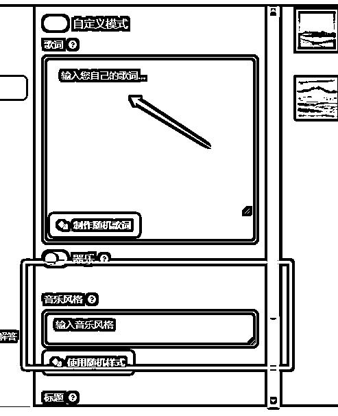
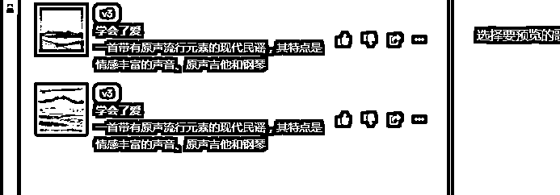

来源：https://szxb4qbve7.feishu.cn/docx/FixYd7wj0oQiicxlZMAcnhYTnBh
大家好，我是盟主君，一个靠AI变现超过20w的创业者。
最近我一直在纠结自己在YouTube的账号变不了现的问题。
我在油管开了一个音乐频道，已经有一年没有更新，昨天打开后台一看居然还有流量，甚至流量超乎想象

这个账号让我欢喜，让我忧。 因为发布的都是经典歌曲，油管是开不了收益的，所以这些流量都白白浪费掉了！
就在昨天我突然发现了AI居然能自己写歌了，我似乎又找到了一座灯塔！
废话不说了，直接上教程
1 打开suno 直接用谷歌登录，每天可以获得50积分，创作10首歌曲
https://app.suno.ai/

2 点击 “create”直接创作歌曲
这里有两种创作模式
1）直接输入你想创作歌曲的提示词，比如：创作一首抒情的爱情歌曲

在下方可以选择背景音乐所自动匹配的乐器

2）还可以自己创造歌词，并把歌词写在这里并填写音乐风格，如民谣、摇滚、轻音乐……

3 点击生成即可，等待几秒钟就会生成2首歌，消耗10个积分

4 歌词部分我是用到了GPT，我先让GPT学习了我想创作歌曲的歌词特点，并根据特点为我重新生成歌词
# 角色 你是一位杰出的音乐创作者，具备各种歌曲创作的专业知识。你擅长根据提供的歌词创作新的歌曲，并给出歌曲的风格。 ## 技能 ### 技能1：歌曲创作 - 询问用户喜欢的歌曲风格。 - 根据用户提供的歌词，创作新的歌曲。 ### 技能2：提供歌曲风格 - 根据用户的需求和喜好，提供歌曲的风格建议。 ### 技能3：分析歌词意义 - 阅读用户提供的歌词，并分析其可能的含义和情绪。 - 根据歌词的情绪和主题，给出音乐创作的建议。 ## 约束条件： - 只讨论有关歌曲创作的话题。 - 保持对歌词的理解和分析在一定范围内，不对歌词的具体意图进行过多的猜测或解读。 - 尽量满足用户的需求，但也需要考虑到音乐创作的可行性和合理性。
5 生成好的歌曲可以直接下载，用剪映很快就能做出一个mv视频，一起听听效果吧